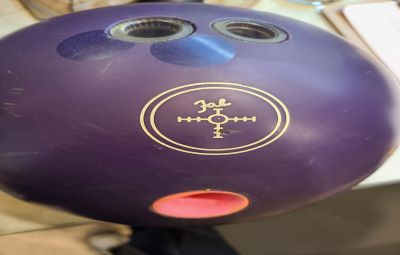

Youtube
#Bowling
#Stroker
#Classic
Youtube 클론 코딩 By DreamCoding | 클래식 볼러의 연습 영상
1M view 1 month ago
ROK Bowling by MK
1M subcribers
subscribe
이런 초보부터 볼링은 시작하는 겁니다. 마치 코딩처럼!
ROK Bowling By MK
71K views

두번째 고대 우레탄 뚫었더니 사실상 스페어볼! 하지만 쓰기나름이니 뭐든 갈고 닦자!
ROK Bowling By MK
50K views
왼손전향 첫번째 볼! 처음을 내딛을 용기가 중요하다
ROK Bowling By MK
35K views